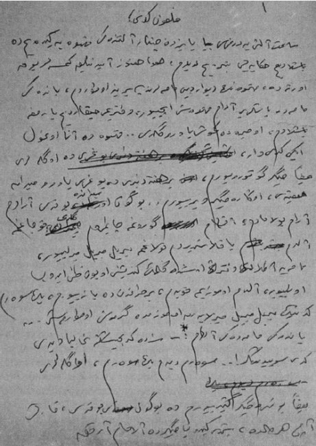
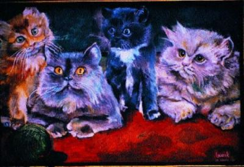

Saat altıya doğru Beyazıt Çınaraltı’ndaki kahveye gideyim de başladığım öyküyü bitireyim dedim, hava daha aydınlık, kimseler yok ortada, kahvenin duvar gibi masalarından birine oturdum; yandaki masada yaşlı bir adam kahvesini içiyor, defterimi çıkardım, yazmıya başladım, o sırada gümüş yavru geldi...
Kahvede ana oğul iki kedi var, öğleleri bazen ciğer götürüyorum, bir haftadan beri bir bu gri yavru meydana çıktı, ona da ciğer veriyorum; bugün meydanda yoktu, aradım bulamadım, akşam görünce çağırdım, geldi kucağıma aldım yaklaştırdım kulağıma, mırıl mırıl mırlıyor, masaya atladı, defterin üstünde kalemin gidip gelişini oyun zannedip kalemi ısırmaya çalışıyor, aldım omuzuma koydum, bir taraftan da yazıyorum; pek severim kedinin mırıl mırıl mırlıyarak omuzumda gezmesini, oturuşunu; yandaki masadaki adam (altmış yaşından fazla, saçları dökük, sarışın, daha doğrusu tuz hardal karışımı bir renk, oldukça temiz giyinmiş): – Siz de kedicisiniz galiba? dedi, kedi seviyorsunuz! Severim dedim, pek severim. Öğleleri bazen bunlara ciğer getiriyorum, bugün yoktu, karnı aç herhalde, şimdi gidip ciğerciden alamam artık...Ben dedi adam; hiç sevmem kediyi evde olsa kaçarım! Olabilir dedim, her insan kedi sevmez, bazısı sever bazısı sevmez! Hayır yanlış anlamayın diye telaşlandı, arz edemedim yani; sevmem diyorsam sebebi var, benim küçük yeğenim vardır, ablamın kızı; daha doğrusu torunu, üç dört yaşında, bir gün kediyi mıncıklamış mı ne yapmış, aman beyim, hayvan yandan böyle çocuğun suratına bir atıldı, böyle dört elleriyle, tırnaklarıyla, dar yetiştim, yoksa yüzünü parçalayacak! Gözünü bile çıkarabilir, dedim hatta... Aman beyim ne söylüyorsunuz, zor aldım elinden kızcağızı! Canı yanmış herhalde hayvanın, dedim... Hayır efendim dedi, tabii hayvan, canı yanmış, canı yanmış, yanlış anlamayın sakın, ben sevmem! Yani nankördür, onun için, yoksa ne bilsin hayvan işte; ama sevmem! At severim, köpek koyun severim bak, çünkü bunlar insanın maişetini temin eder; biraz durdu, ama İstanbul’da hayvan beslenmez dedi! Evet dedim, hele at hiç! Kedi köpek için de bahçeli ev lazımdır... Evet dedi, benim kurt köpeğim vardı beyim görseniz kafa bu kadar, baytar ölçüsüyle 84 santim!
Nedir baytar ölçüsü...
Yerden omurgasına, şey yani sırtına kadar demektir! Büyük köpekmiş dedim, bu masa kadar yüksek... Aman efendim, dedi kafa bu kadar, görülecek şey, günde bir sığır işkembesi alır pişiririm, bu masa kadar tenceresi vardı, içine bir az da zeytinyağı atarım, hayvan peklik çekmesin diye! Çiğ işkembe yenmez mi diye sordum, yenmez dedi, kurtlara çiğ et verilmez! Katiyen olmaz.. Bu köpeği bana Almanya’dan bir dostum getirmişti, Alman ordusunda vazife görmüş; laftan anlar beyim görseniz, otur dersin oturur, çık dersin çıkar, yukarı çık, aşağı in, hepsini yapar... Adeta konuşacak dedim, anlıyor ama konuşamıyor! Anlıyor beyim, anlıyor dedi, hayvan sezgisi tuhaftır! Bendeniz kürkçüyüm: – Kürkçü müsünüz? : – Evet Çarşı’da dükkânımız vardı, sonra Ankara’ya naklettik, zaten işleri benim çocuğa bıraktım, artık ben çalışmıyorum şimdi! İşte Çarşı’da Hristo vardı, ama tüccar o o zaman, ben tezgâhtarım, o adamakıllı zengin, Handa iki dükkân kiraladı; döşemelerini söktürdü kümes yaptı, tavuk beslemeye başladı, onda da tavuk merakı vardı! Çarşı’nın içinde kümes mi yaptı? Tabii Çarşı’nın içinde; ama Çarşı’nın üstü camekânlı bir kısmı vardır, Büyük Zelzelede yıkılmış da üstü tonoz kalmış, işte orada iki dükkân kiraladı, döşemelerini söktürdü, sabahleyin herkesten evvel gelir, saat altıda yedide, çırağı vardı Yorgo, ona dükkânları açtırır, tavukların yemlerini verir, kuyruk altı, kuyruk üstü, dil altı hastalıklarına bakar, sirke, zeytin yağı, bilmem sarmısak ne ilaçlarını yapar ondan sonra iskemlesini atar, karşısında kahvesini içerdi; Onun da zevki öyle işte, merak, yoksa ihtiyacı yok, zengin adam... Ama merak işte; ben onunla baş edemezdim, ben Bebek’te otururdum, o Çengelköy’de, bir gün bile Çarşı’ya ondan evvel gelemedim! Biraz sustuk, ben hâlâ kediyle oynuyorum: – Ben, dedi köpeğin ağladığını gördüm, ağladığını! Ağladığını mı? diye sordum... Evet ağladığını gördüm beyim; bizim ev vardı Göztepe’de, benim sizden iyi olmasın ablam vardır, üç tane birisi benden büyük çocukları vardır, benim de üç tane yetimim, hep bir yerde yaşarız, bahçe geniş, bir ucu Bağdat Caddesinde bir ucu denize dayalı, yirmi dönüm arazi o zaman, tabii şimdi parsellenip parsellenip apartman oldu; Şemsettin Sami Bey’inmiş, ev üç daire ama hep beraber yaşıyoruz, bizimkiler, kardeşlerimin çocukları yazın Adada oturuyoruz, orada çocuklar avare olsunlar (herhalde avare olmasınlar demek istedi) itlik etmesinler diye sandal aldım onlara, o zaman parasıyla bin yüz lira; yüz elli metro ağ, ıstakoz sepetleri filan, tek çocuklar avare olsunlar da şuna buna ne bileyim vakit geçirsinler diye... Ama söyledim: – Bakın, dedim! Avarelik yok, şirketin parasını çarın çurun etmeyin haa dedim; işte onlar da balık malık tutuyorlar, ıstakoz filan satıyorlar, tek avare olsunlar da itlik öğrenmesinler! Bir gün bir arkadaşlarını alıp Adaya götürecekler, biz de Göztepe’deyiz, köpekte anlamış; sandalın baş altına gizlenmiş, çocuklar başladılar sızlanmaya, şimdi biz buna işkembeyi nerden bulup ta pişirelim diye söylenmeye, çağırıyorum gelmez; ablamdan ödü kopardı, bilmem bilir misiniz eski kadınları? Yaş kaç kırk beş var mı; çoktan geçti dedim bilirsiniz öyleyse, tabii sofu kadın, köpeği hiç sevmez, yanına bile sokmaz, hayvan da ondan ödü kopardı, tir tir titriyor böyle; koskoca köpek halbuki! Hele biri bahçeye girsin, yabancı birisi, çıkabilirse aşkolsun! Bir yerinden mi yaralardı dedim: – Hayır, dedi, girerken ses çıkarmaz, fakat çıkarken karşısına geçer, çıkabilirsen çık! İşte koca hayvan ablam çağırır çağırmaz çıktı sandaldan; ama beyim Allah sizi inandırsın iki gözünde iki yaş! Ağladı demek bayağı? Höngür höngür ağladı beyim, gözümle gördüm yahu! İki gözünde iki yaş; ablam bunu görünce yüreği yumuşadı, hadi dedi, defol git! Köpek yedi metreden atladı sandala!
– Yedi metreden mi?
– Evet sandal açılmıştı karadan, yedi metreden sandala atladı! Dokuz yaşında öldü kaç sene evvel. Hayatımda üç köpek besledim, ama kedi hiç sevmem, nefret ederim, bir evde kedi olsun kaçarım! Dayak da yedim o yüzden.
– Kedi sevmeme yüzünden mi...
– Hayır kedi yüzünden; o zaman orta mektep yok, rüştiye var, bizim ileride Fincancılar’da evimiz vardı o zaman, peder nur içinde yatsın, hepsi öldüler şimdi, esnaftı, evimiz de kalabalık, annem eski kadın tabii, dolma pilavı yapmış!
– Dolma pilavı hiç duymadım, dolmanın içinde mi pilavı?
– Yok efendim, pilav vardır üstüne ip geçirilir böyle; dolma işte!
– Yaprak dolması filan mı?
– Evet, ama taze zamanında; gevrek vaktinde! Dolmalar ipe dizilir, pilavın üstüne konur sıra sıra; annem de pilav pişirmiş, dolmaları ipe dizip yerleştirmiş; üstüne bez sarmış; bizim bir kedi vardı beyim, melun kedi derdik, hırsız mı hırsız! Sen gel tencerenin kapağını aç, bir sıra dolmayı al, başında bekler soğusun da yiyeyim diye...
– Eli ayağı yanmamış mı? dedim: – Yanmamış efendim, hem mangal (eliyle tarif etti) üstünde saç ayak, onun üstünde ayrıca ocak, üstünde tencere, düşünün bakın!

Mangalın kenarına çıkmış, tencerenin kapağını açmış, dolmaları yere koymuş, başında bekliyor, soğusun da yiyecek! Annem bunu görünce tabii eski zaman kadını; ben de mektepten yeni gelmişim, üstümde önlüğüm, annem gösterdi bana vaziyeti bir sopa kaptım, kedi kaçayım derken pancurun arasına sıkışmış; üstüme bir işedi beyim baştan aşağı sidik oldu; o zaman lekeci (temizleyici) yok ki versin temizletsin, tabii gömlek yıkanacak, ütülenecek, ben giyeceğim de ertesi gün mektebe gideceğim, melun kedi yüzünden dayak yedim ama ne dayak... Zaten iki defa döğmüştür annem beni; bugün seksen dört yaşındayım (biraz evvel yetmiş dört demişti halbuki!) hâlâ unutamam o dayağı... Kedi, dedim dayağı sizden yemiş, siz de annenizden... Kıs kıs güldü, ya ya dedi; ama dayak beyim, eski zaman kadını, müşfik, merhametli; ama kedinin yüzünden dövdü beni işte! Bir kere de tabanca yüzünden yemişimdir!
– Tabanca yüzünden mi?
– Evet tabanca yüzünden! O zaman asayiş bugünkü gibi değil, bizim taraflar tenha, eve gidip gelirken diye babama arkadaşı tabanca göndermiş, annem de tabii kaç göç var, kapının önünde şarjörü çıkarıp tabancayı verdi elime; ama ben muzip çocuğum, tabancayı alır almaz pırrr... Annem peşimde, elimde tabanca, ne kadar oda sofa varsa dört döndük! Anneciğim zavallı peşimde, beni tutmak ister tutamaz ben kaçarım; nihayet bahçeye kaçtım, duvarın köşesinde beni sıkıştırdı, bir dayak bir dayak, bir dayak, eski zaman kadını! Ama melun kedi yüzünden yediğim dayağı unutamam; hiç sevmem kedileri, kedi olan yerden kaçarım...
21.9.1971 Çarşamba / Çınaraltı